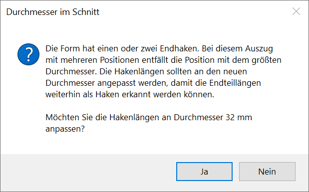

Um einen einzelnen Querschnitt zu verschieben
Einzelnen Querschnitt einer Verlegegruppe verschieben.
§Klicken Sie erst den zu verschiebenden Durchmesser [Welcher ø] und dann die neue Lage an. [(neue) Lage].
Der Durchmesser wird an die gewählte Stelle verschoben.
Tipp: |
|
|
Sollen Durchmesser exakt verschoben werden, nutzen Sie die Funktion [Konst1 | Versch | Setzen]. |
Um eine Verlegung im Schnitt neu zu generieren
§Klicken Sie die Gruppe der Durchmesser an, die zuvor verändert wurde. [Welche Gruppe?].
Die Verlegung wird zwischen dem ersten und dem letzten Durchmesser dieser Gruppe neu verteilt.
Um eine Verlegung im Schnitt zu ändern
§Klicken Sie die Gruppe der Durchmesser an, die geändert werden soll. [Welche Gruppe?].
§Folgen Sie der Abfrage entsprechend einer Neuverlegung. Die vorhandenen Parameter werden als Vorschlagswerte angezeigt und können mit der Eingabetaste oder Rechtsklick übernommen werden.
Wenn nach der Änderung des Stabdurchmessers eine automatische Anpassung der Hakenlängen an der Auszugsform vorgenommen werden kann, erhalten Sie eine Meldung:
 |
Siehe: Hakenlängen an den Stabdurchmesser anpassen
Um eine Verlegung im Schnitt zu löschen
Einzelne Durchmesser-Gruppen in Schnittdarstellungen per Mausklick aus der Zeichnung entfernen.
§Klicken Sie die Durchmesser-Gruppe an, die gelöscht werden soll. [Welche Gruppe?].
Die angeklickte Verlegung wird aus der Zeichnung entfernt. Sie können sofort die nächste Verlegung löschen.
Siehe auch: